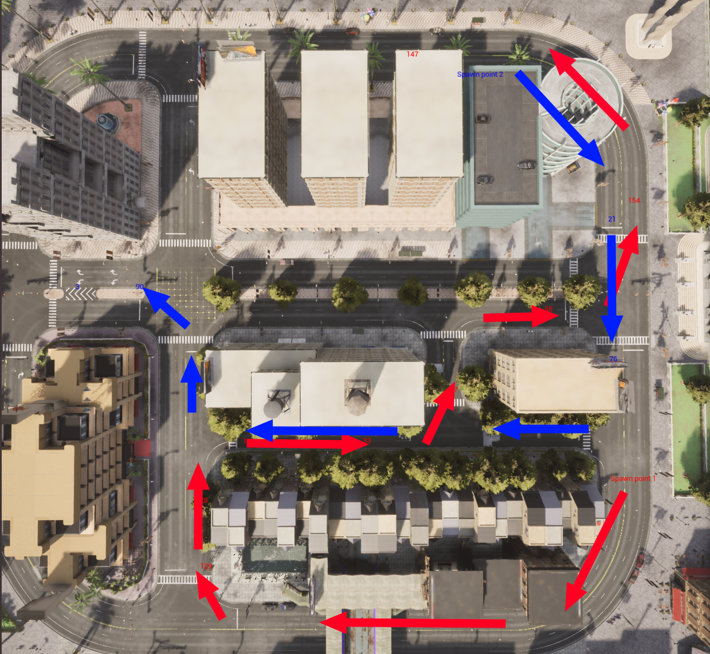

Traffic manager
When we train neural networks to control autonomous vehicles, one of the key challenges the autonomous driving agent has to contend with is other road users. On top of the task of recognising and navigating the topology of the road network and maintaining lane discipline, the autonomous driving agent must also recognise other vehicles and anticipate the impact on its planned course of action. CARLA's Traffic Manager (TM) enables the management of an ensemble of vehicles navigating through the simulation and creating obstacles and challenges for the vehicle of interest, i.e. the vehicle we are training or controlling. In the CARLA literature, we refer to this vehicle as the "Ego vehicle" to distinguish it.
The TM manages the behavior and lifecycles of Non Player Character (NPC) vehicles within the map, populating the simulation with vehicles that act as other road users do on the real road network. In this tutorial, we will cover some of the functionality of the TM and how to use it in your simulations to create and control NPCs.
Setting up the simulator and initialising traffic manager
First, we will initialise the TM and create some traffic randomly distributed around the city.
import carla
import random
# Connect to the client and retrieve the world object
client = carla.Client('localhost', 2000)
world = client.get_world()
# Set up the simulator in synchronous mode
settings = world.get_settings()
settings.synchronous_mode = True # Enables synchronous mode
settings.fixed_delta_seconds = 0.05
world.apply_settings(settings)
# Set up the TM in synchronous mode
traffic_manager = client.get_trafficmanager()
traffic_manager.set_synchronous_mode(True)
# Set a seed so behaviour can be repeated if necessary
traffic_manager.set_random_device_seed(0)
random.seed(0)
# We will aslo set up the spectator so we can see what we do
spectator = world.get_spectator()
Spawning vehicles
When we create TM vehicles, they need a map location at which to spawn. We can define these ourselves using our own chosen map coordinates. However, to help with this, each CARLA map has a set of pre-defined spawn points spread evenly throughout the road network. We can use these spawn points to spawn our vehicles.
spawn_points = world.get_map().get_spawn_points()
We can use CARLA's debug functions to see where the spawn points are. Run the following code then fly through the map and inspect where the spawn points are. This will come in handy when we want to choose more specific points to use for spawning or guiding vehicles.
# Draw the spawn point locations as numbers in the map
for i, spawn_point in enumerate(spawn_points):
world.debug.draw_string(spawn_point.location, str(i), life_time=10)
# In synchronous mode, we need to run the simulation to fly the spectator
while True:
world.tick()
Now let's spawn some vehicles.
# Select some models from the blueprint library
models = ['dodge', 'audi', 'model3', 'mini', 'mustang', 'lincoln', 'prius', 'nissan', 'crown', 'impala']
blueprints = []
for vehicle in world.get_blueprint_library().filter('*vehicle*'):
if any(model in vehicle.id for model in models):
blueprints.append(vehicle)
# Set a max number of vehicles and prepare a list for those we spawn
max_vehicles = 50
max_vehicles = min([max_vehicles, len(spawn_points)])
vehicles = []
# Take a random sample of the spawn points and spawn some vehicles
for i, spawn_point in enumerate(random.sample(spawn_points, max_vehicles)):
temp = world.try_spawn_actor(random.choice(blueprints), spawn_point)
if temp is not None:
vehicles.append(temp)
# Run the simulation so we can inspect the results with the spectator
while True:
world.tick()
If you fly through the map with the spectator now, you should see stationary vehicles occupying the roads in the map.
Controlling vehicles with Traffic Manager
We can now give the TM control over our vehicles and let the simulation run. Once the TM takes control of the vehicles, they will move around the roads autonomously, following features of the road network like lanes and traffic lights and avoiding collisions with other vehicles.
The TM has a number of functions that allow specific behaviors to be modified for each vehicle. In the following example, we set each vehicle with a random probability of ignoring traffic lights, so some vehicles will tend to ignore traffic lights, while others will obey them. There are a number of different behaviours that can be set, refer to the Python API reference for details.
# Parse the list of spawned vehicles and give control to the TM through set_autopilot()
for vehicle in vehicles:
vehicle.set_autopilot(True)
# Randomly set the probability that a vehicle will ignore traffic lights
traffic_manager.ignore_lights_percentage(vehicle, random.randint(0,50))
while True:
world.tick()
If you now fly through the map with the spectator, you will see vehicles driving autonomously around the map.

Specify routes for vehicles
In the previous steps, we saw how to spawn a collection of vehicles into a map, then hand control of them over to the TM to create a busy town full of moving traffic. The TM has deeper functionality to control the behavior of vehicles more closely.
We will now use the traffic_manager.set_path() function to guide TM vehicles along specific paths. In this case, we will create two converging streams of traffic that will converge in the center of town and create congestion.
Firstly, we'll choose some waypoints to construct our path. Spawn points are convenient waypoints and in the same way as earlier we can use CARLA's debug tools to draw the locations of the spawn points on the map. By flying through the map with the spectator, we can choose the indices of the spawn points we want to use for our path. The set_path() function uses a list of coordinates specified as carla.Locations.
# Draw the spawn point locations as numbers in the map
for i, spawn_point in enumerate(spawn_points):
world.debug.draw_string(spawn_point.location, str(i), life_time=10)
# In synchronous mode, we need to run the simulation to fly the spectator
while True:
world.tick()
We choose our spawn points and waypoints to create two converging streams of traffic within the town, creating congestion, which might be an interesting scenario to present to an autonomous driving agent.
spawn_points = world.get_map().get_spawn_points()
# Route 1
spawn_point_1 = spawn_points[32]
# Create route 1 from the chosen spawn points
route_1_indices = [129, 28, 124, 33, 97, 119, 58, 154, 147]
route_1 = []
for ind in route_1_indices:
route_1.append(spawn_points[ind].location)
# Route 2
spawn_point_2 = spawn_points[149]
# Create route 2 from the chosen spawn points
route_2_indices = [21, 76, 38, 34, 90, 3]
route_2 = []
for ind in route_2_indices:
route_2.append(spawn_points[ind].location)
# Now let's print them in the map so we can see our routes
world.debug.draw_string(spawn_point_1.location, 'Spawn point 1', life_time=30, color=carla.Color(255,0,0))
world.debug.draw_string(spawn_point_2.location, 'Spawn point 2', life_time=30, color=carla.Color(0,0,255))
for ind in route_1_indices:
spawn_points[ind].location
world.debug.draw_string(spawn_points[ind].location, str(ind), life_time=60, color=carla.Color(255,0,0))
for ind in route_2_indices:
spawn_points[ind].location
world.debug.draw_string(spawn_points[ind].location, str(ind), life_time=60, color=carla.Color(0,0,255))
while True:
world.tick()

Now that we have chosen our spawn points and way points, we can now start spawning traffic and setting the spawned vehicles to follow our waypoint lists.
# Set delay to create gap between spawn times
spawn_delay = 20
counter = spawn_delay
# Set max vehicles (set smaller for low hardward spec)
max_vehicles = 200
# Alternate between spawn points
alt = False
spawn_points = world.get_map().get_spawn_points()
while True:
world.tick()
n_vehicles = len(world.get_actors().filter('*vehicle*'))
vehicle_bp = random.choice(blueprints)
# Spawn vehicle only after delay
if counter == spawn_delay and n_vehicles < max_vehicles:
# Alternate spawn points
if alt:
vehicle = world.try_spawn_actor(vehicle_bp, spawn_point_1)
else:
vehicle = world.try_spawn_actor(vehicle_bp, spawn_point_2)
if vehicle: # IF vehicle is succesfully spawned
vehicle.set_autopilot(True) # Give TM control over vehicle
# Set parameters of TM vehicle control, we don't want lane changes
traffic_manager.update_vehicle_lights(vehicle, True)
traffic_manager.random_left_lanechange_percentage(vehicle, 0)
traffic_manager.random_right_lanechange_percentage(vehicle, 0)
traffic_manager.auto_lane_change(vehicle, False)
# Alternate between routes
if alt:
traffic_manager.set_path(vehicle, route_1)
alt = False
else:
traffic_manager.set_path(vehicle, route_2)
alt = True
vehicle = None
counter -= 1
elif counter > 0:
counter -= 1
elif counter == 0:
counter = spawn_delay
With the above code, we have created two converging streams of traffic originating from opposite sides of the map, guided by the set_path() function of the TM. This results in congestion on a road in the center of town. This kind of technique could be used on a larger scale to simulate multiple tricky cases for autonomous vehicles, such as a busy roundabout or highway intersection.